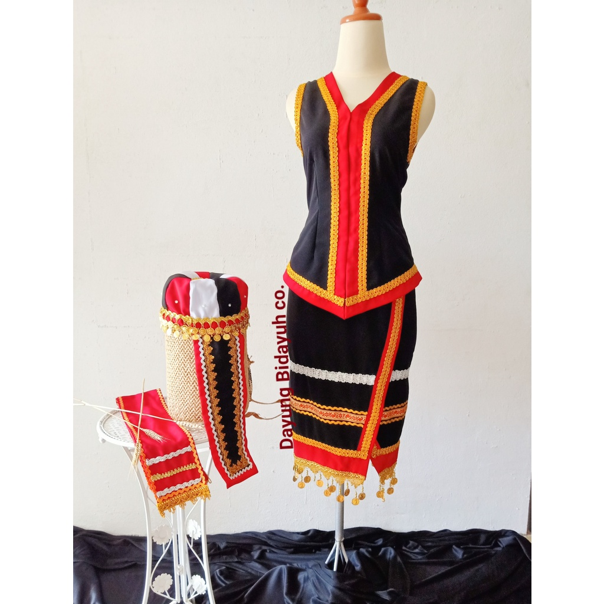
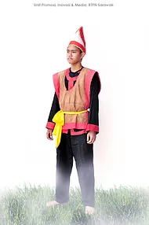

WOMEN TRADITIONAL ATTIRE
The Bidayuh people of the Bau district in Kuching, Sarawak, Malaysia, have a vibrant culture reflected in their distinct traditional attire.
JOMUH
A Bidayuh Bau woman's outfit revolves around her gorgeous skirt, known as the jomuh, which is typically weaved from hemp or cotton threads. The jomuh is dominated by geometric designs in red, black, and white that stand for power, wealth, and purity. More recent iterations might use fewer colours and more straightforward designs.
BAJU & SELAPAI
The baju, or short-sleeved or sleeveless blouse, goes well with the jomuh. Usually, a baju is made from a thin, contrasting-colored fabric. The jomuh and baju are fastened together at the waist by a sash called a selapai
PANGJIAH
The gorgeous, beaded necklace known as the pangiah adds an element of brightness. Every pangiah is different, with delicate beading patterns and a striking colour scheme. Cultural significance lies in the colours and designs, which change according on the wearer's particular style and the occasion.
PORIK & SIPIAH
A metallic belt, called porik, accents the waist, while sipiah, the headgear, completes the look. Sipiah is a beautiful and elaborate creation adorned with beads, feathers, and sometimes even precious metals.
MEN TRADITIONAL ATTIRE
TAAVUOP or Tahup
Men typically dress in a long loincloth known as a tahup or tavuop. The tavuop, which is often made of blue cotton and has bands of red, blue, and white at the ends, represents strength and masculinity.
BURANG SUMBANG:
Crowning the ensemble is the burang sumba, a unique headgear crafted from red cloth with a narrow border of gold lace.
KIMA:
Men may choose to wear kima, or decorated armlets, for a hint of elegance. Beads or brass are two examples of materials that can be used to make these armlets